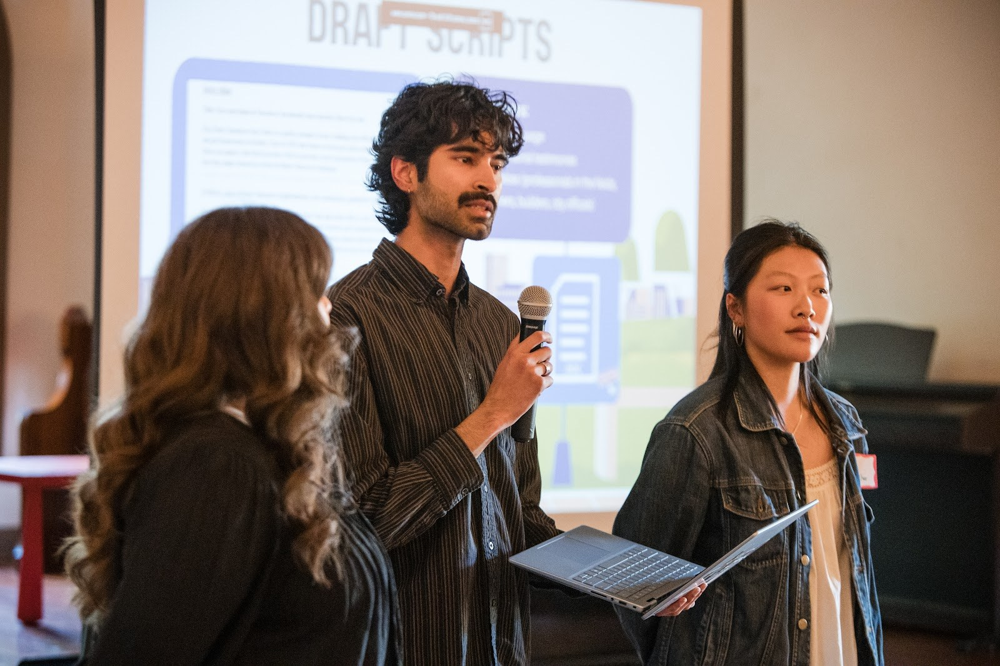

CityHive / Policy Under Pressure / 2026
CityHive:
Policy Under Pressure
A social media strategy for Community Energy Association, developed with my CityHive team.

The brief
Our project focused on sustainable building regulations in Metro Vancouver. Renters and future homeowners are directly affected by these decisions, but the policy discussion can be hard to follow.
I conducted market research and expert interviews to inform the team’s recommendations. We developed a social media approach that connects policy to people’s concerns and gives them a way to participate.
The proposal
The research pointed us toward renters and future homeowners, people directly affected by building policy who are often missing from the conversation. Our “Step Codes for Social Media” proposal starts with what the policy means, then addresses affordability and decision-making power before moving into community stories and citizen action.
- Explain the policy and why it matters.
- Address the cost myths.
- Introduce the people making decisions.
- Share community stories.
- Show pathways for citizen action.
We proposed short-form video before municipal elections, using accessible language, personal testimony and voices from across the issue. The five-part sequence is the recommendation; this case describes the team’s strategy and presentation.